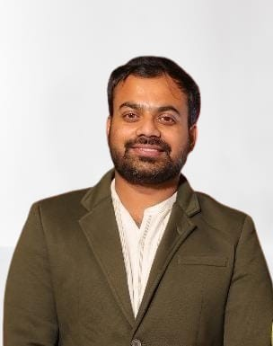

Post Graduate Residency
PGIMS Rohtak (2021–2024)
- Managed OPD & emergency cases
- Performed slit-lamp & fundoscopy
- Assisted cataract & retinal surgeries
- Handled glaucoma & anterior segment disorders
Medicine • Management • Entrepreneurship

Ophthalmologist with a strong interest in clinical care, research, and entrepreneurship. Currently pursuing BBA DBE at IIM Bangalore to explore how management and healthcare intersect.
PGIMS Rohtak (2021–2024)
Micro-venture offering 30-minute garden maintenance sessions at ₹250. Focused on pruning, soil care, and aesthetic improvement.
| Clinical | Professional |
|---|---|
| Cataract Surgery | Communication |
| Fundoscopy | Entrepreneurship |
| Emergency Care | Research |